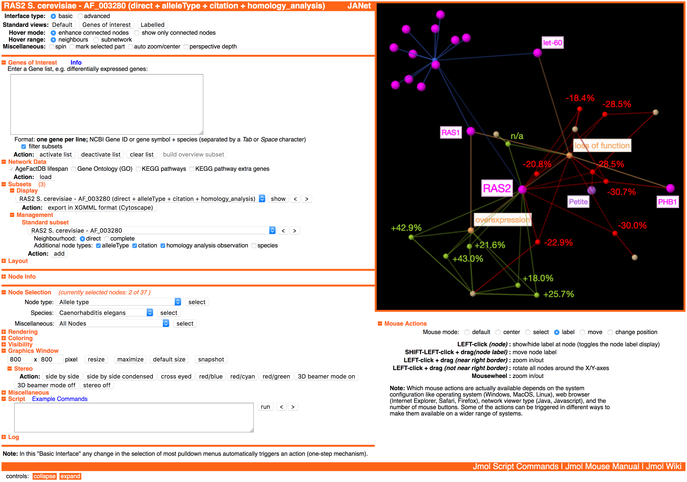

JANet (Jmol AgeFactDB Network-viewer) - 3D Network Viewer for Lifespan Data

Selected Features
- Interactive 3D network visualization
- 2D representation
- Stereo representation
- 3D beamer mode
- Ageing-related network data (AgeFactDB)
- Lifespan observations
- Ageing factors
- Augmentation nodes
- Augmentation with external domain knowledge
- Gene Ontology (GO)
- KEGG Pathways
- Genes of interest analysis
- Scripting language
- Jmol scripting language
- JANet-specific API